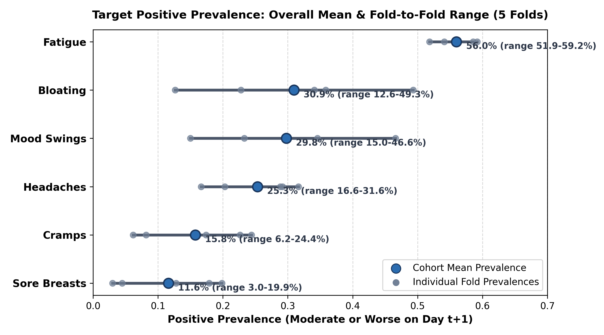
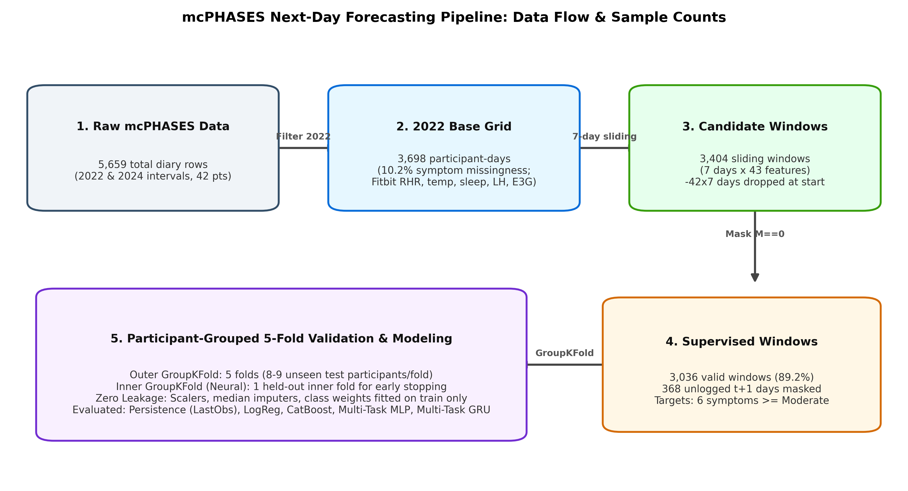
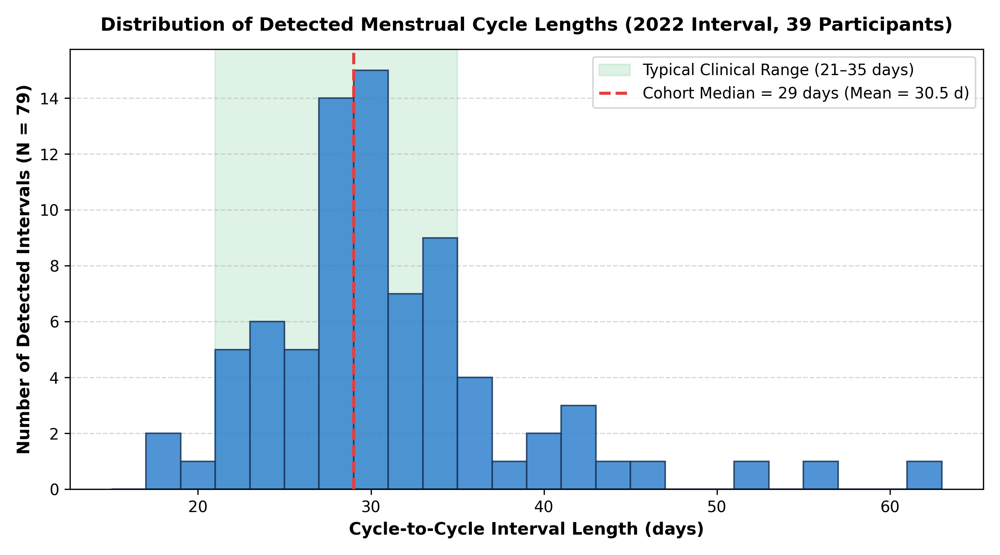
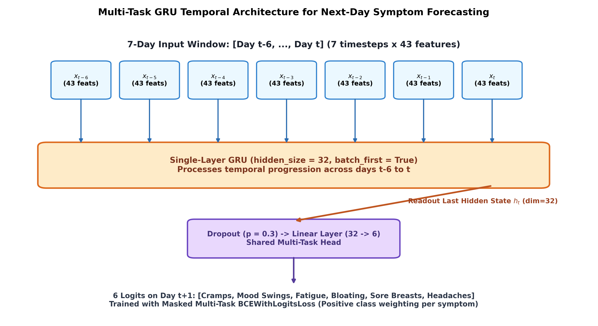
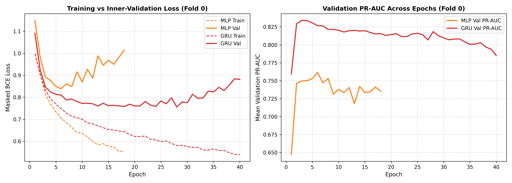
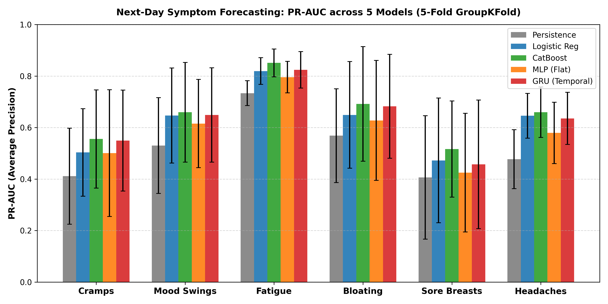
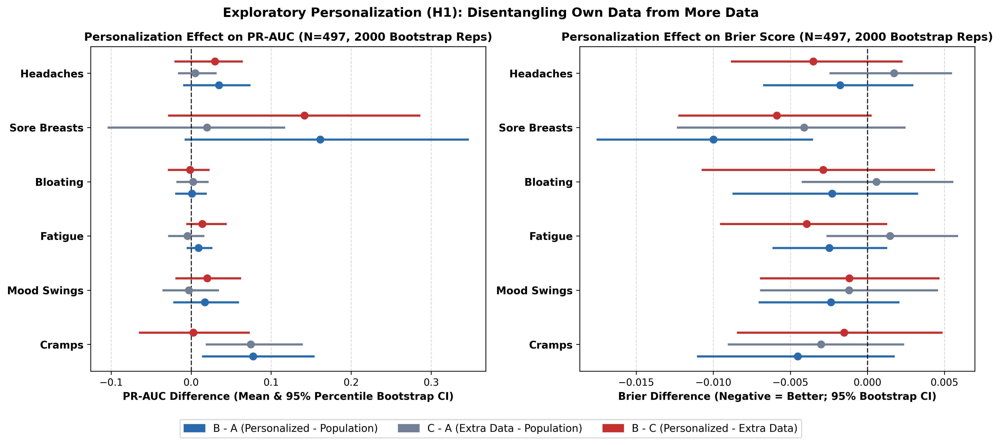

A Leakage-Controlled Comparison of Baselines and Temporal Deep Learning, with an Exploratory Personalization Test
Given a 7-day lookback window [t−6, t−5, ..., t] of multimodal signals (wearables, hormones, self-reports), predict whether each of 6 target symptoms will be Moderate or Severe (ordinal score ≥ 3 on 0–5 scale) on day t+1:
Goodale et al. (2019, JMIR): Studied 237 conception-seeking women with wristbands. Demonstrated significant biphasic shifts in wrist skin temperature and resting heart rate across menstrual phases.
Specht et al. (2026, mcPHASES preprint): Used CatBoost + Hidden Semi-Markov Model to classify 4 cycle phases solely from symptom diaries (67.6% LOSO accuracy).
| Audit Finding | Engineering Decision |
|---|---|
| 2024 interval was optional; symptoms 99.4% missing | Filter to 2022 only (3,698 days, ~10% missing) |
| PdG hormone was 0% populated in 2022 | Drop PdG; keep LH & E3G (estrogen) |
| Raw heart rate table had 63.1 million rows | Use daily aggregates (Resting HR, sleep, temp) |
| Continuous glucose only ran for first 90 days | Exclude glucose (avoids extreme sparsity) |


If a participant skipped the diary on day t+1, the target is marked NaN with Mask M = 0. Masked entries contribute zero loss and zero gradients during neural backpropagation:


| Input Tensor | Shape (batch_size=64, seq_len=7, feat_dim=43) |
| GRU Layer | nn.GRU(input_size=43, hidden_size=32, batch_first=True) |
| Readout | Final hidden state h7 ∈ ℝ32 via h_n.squeeze(0) |
| Regularization | Dropout (p = 0.3) + LayerNorm in MLP |
| Projection Head | nn.Linear(32, 6) producing logits for 6 targets |
| Optimizer | AdamW (lr = 10-3, weight decay = 10-3), max 60 epochs |
SimpleImputer(strategy='median') and StandardScaler are fit strictly on training fold rows. Test features are transformed using training statistics. Zero leakage of test distributions.

| Symptom | Prev | Persist | LogReg | CatBoost | GRU |
|---|---|---|---|---|---|
| Fatigue | 56.0% | 0.733 | 0.819 | 0.851 | 0.824 |
| Bloating | 30.9% | 0.568 | 0.649 | 0.692 | 0.683 |
| Mood Swings | 29.8% | 0.530 | 0.647 | 0.659 | 0.649 |
| Headaches | 25.3% | 0.477 | 0.646 | 0.659 | 0.635 |
| Cramps | 15.8% | 0.411 | 0.503 | 0.556 | 0.549 |
| Sore Breasts | 11.6% | 0.406 | 0.472 | 0.517 | 0.457 |

| Arm | Training Data Composition | Added Windows |
|---|---|---|
| A (Population) | Training fold participants only | 0 |
| B (Personalized) | A + participant p's own earlier cycles | Median +53 |
| C (Control) | A + earlier cycles of other test participants | Median +363 |
